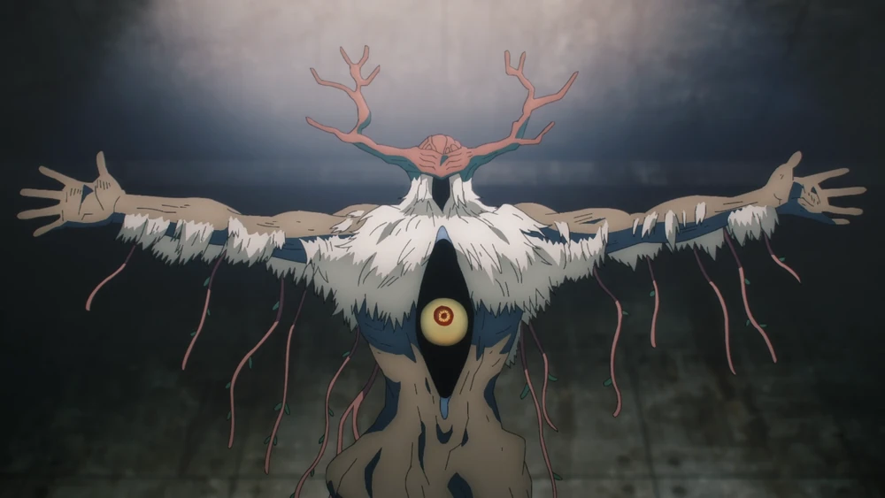
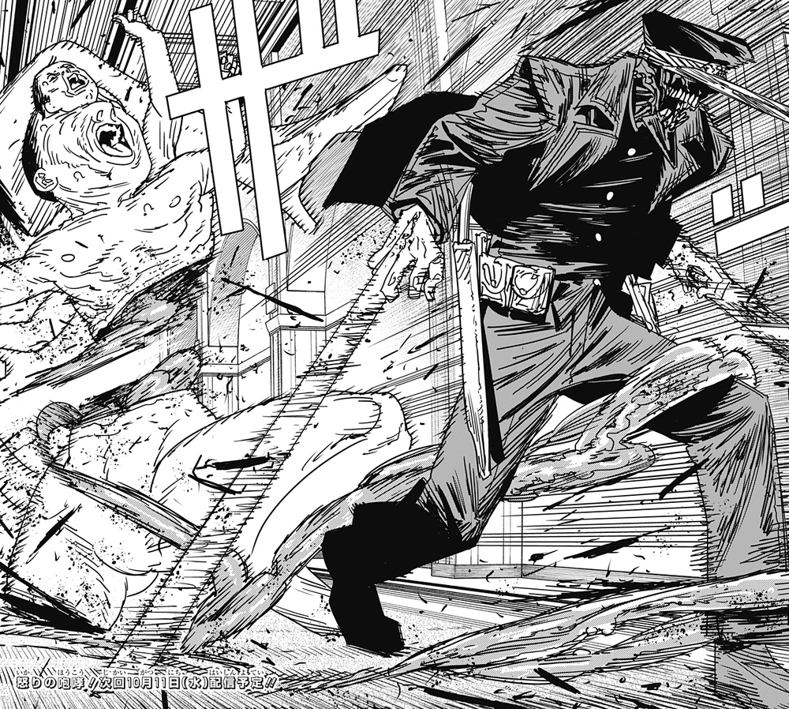
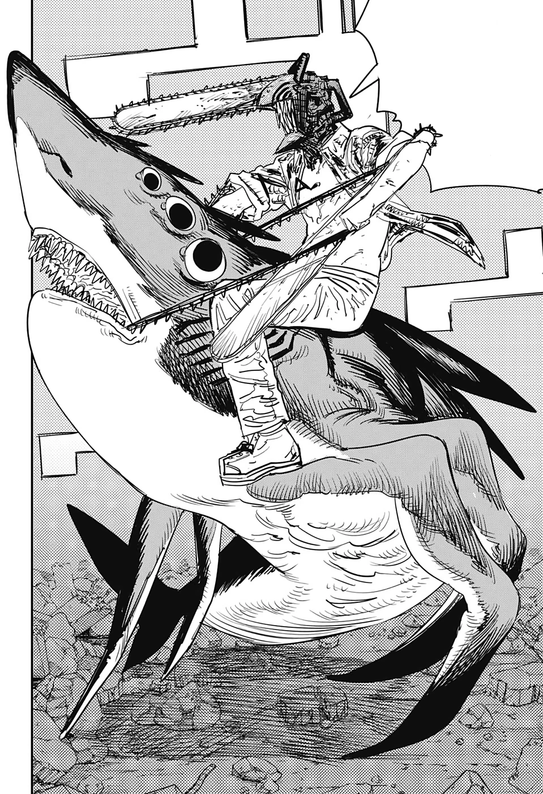

Future Devil
The devil that embodies the fear of the Future and a devil Aki has made a contract with.
It has an extremely playful personality, regularly boasting that the future is best. The Future Devil's contracts are typically very costly, but after witnessing Aki's future, it gives him a contract on the condition that it be allowed to reside inside his eye to witness his horrible future up close, mocking him.
Katana Man
The hybrid devil of the fear of katanas.
Katana Man is a selfish and cruel-hearted man who only cares about killing Denji and forcing him to apologize for killing his grandfather. He will sacrifice innocent people and even his own comrades to do so, being willing to cut through them just to get to Denji..
Beam
The devil of the fear of sharks who merged with a corpse.
Beam is very eccentric, naive and innocent. He often goes along with Denji's plans no matter how crazy they are due to having a lot of respect for the Chainsaw Devil. His devotion to Chainsaw Man is such that he always tries to protect Denji personally and will offer his blood to revive him, even if ends up severely hurting or killing him.
